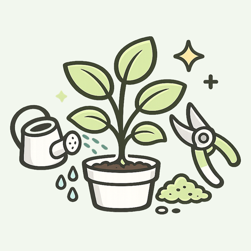
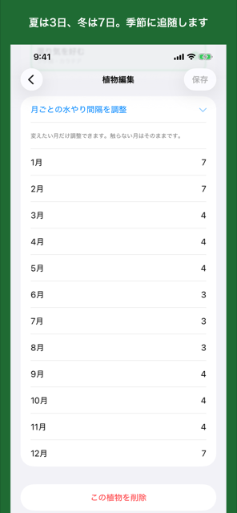
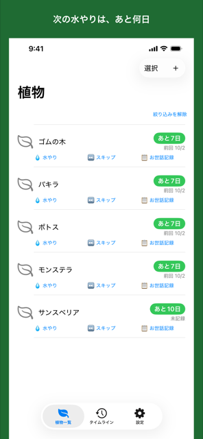
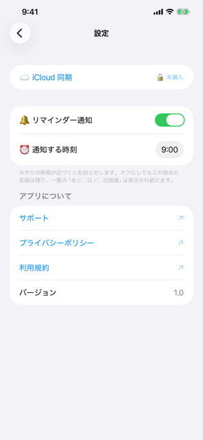
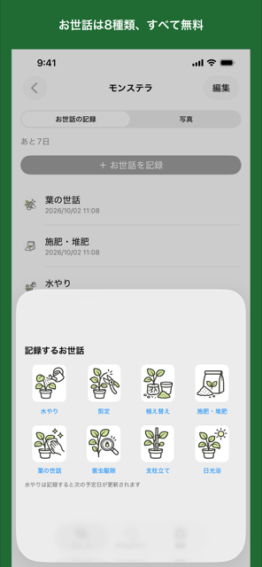
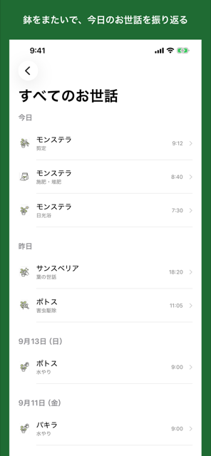

iPhone アプリ
「前にいつ水をやったっけ」を、もう思い出さなくていい。
Sodato は、観葉植物の次の水やり日を「あと3日」のように示すアプリです。
「10日おき」のような固定の間隔では、夏に足りず、冬に多すぎます。
「標準的」（モンステラ・ポトス・パキラなど）を選んだときに用意される12か月分の間隔。夏は5日、冬は12日。
Sodato は、登録するときに 「乾燥を好む／標準的／湿り気を好む」の3択を1回選ぶだけで、 12か月分の間隔を自動で用意します。
次の水やり日は、その日が属する月の間隔で1日ずつ数えます。12月に水をやって1月をまたぐ場合も、 季節の移り変わりに沿って予定日が決まります。
用意された数字は、あとから月ごとに調整できます。育てているうちに「この鉢は夏でももう少し空けていい」と 分かったら、その月だけ直してください。触らない月はそのままです。

一覧に出るのは、名前と「あと◯日」と、その場で押せる操作だけです。
置き場所（リビング・寝室の窓際・玄関など）で絞り込めます。

土がまだ湿っていた日は「スキップ」として残せます。このとき次の予定日は動きません。 予定日を過ぎていれば「◯日超過」と出続けます。
見送るたびに予定が先送りされる作りにはしていません。先送りできてしまうと、 水やりが無限に後ろへずれていき、アプリの目的の逆に働くからです。 スキップで変わるのは、確認をうながす通知が2日後に来ることだけです。

文面は「水をあげよう」ではなく、「土を触って確認してみよう」。
間隔の見積もりは、植物の生態を精密に再現するものではありません。 断定すると、そのズレがそのまま水のやりすぎ＝根腐れにつながります。 確認をうながす形なら、多少のズレが実害になりません。
通知は時刻を選べます。切っても記録と「あと◯日」は残ります。
同じ日に複数の鉢の予定が重なっても、通知は1本にまとまります。文面は変わりません。
アプリアイコンのバッジには、予定日を過ぎた鉢の数を表示します。通知を許可していない場合は表示されません。
水やり・剪定・植え替え・施肥・葉の世話・害虫駆除・支柱立て・日光浴。
どれも記録できて、どれも無料です。水やりだけは、記録すると次の予定日が更新されます。


ホーム上部のボタンから、登録したすべての鉢のお世話記録を、日付の新しい順に1本の時系列で振り返れます。
お世話の記録に写真を添えると、時系列で並びます。写真だけの記録も残せます。
写真はお使いの写真アプリのものを参照します。アプリの中に画像をコピーしないので、 鉢を増やしても本体の容量を圧迫しません。
そういう人のためのアプリです。多機能なアプリを開かなくなった経験がある方に向いています。
買い切りです。月額・年額の課金はありません。
0円
480円（買い切り・一度きり）
購入の復元にも対応しています。
アカウントは要りません。メールアドレスもパスワードも不要です。 鉢とお世話の記録は、お使いの端末と、ご自身の iCloud にのみ保存されます。開発者がその中身を読むことはありません。
広告は表示せず、行動の追跡もしていません。第三者のサービスにデータを渡すことはありません （通信するのは、iCloud 同期と購入のために Apple のサーバーとだけです）。
まだ作っていないのではなく、入れないことを選んでいる機能です。
iOS 17.0 以降の iPhone。